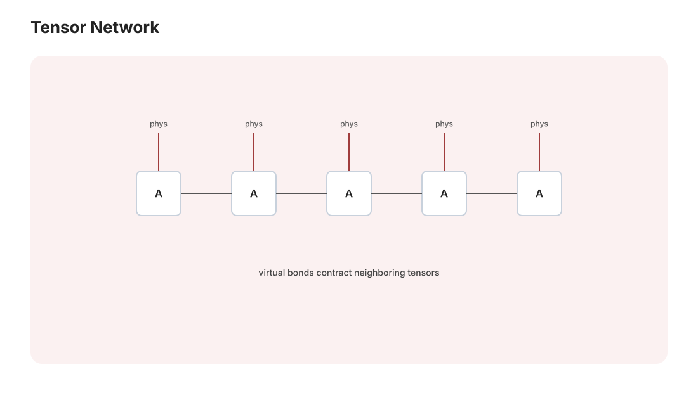

量子多体 · 张量网络与变分方法
对标：Schollwöck（DMRG 综述）/ Orús（TN 入门）｜ 前置：cm-01、qi-01（纠缠熵）、数学站 nla（SVD——本页的发动机） 量子多体的根本困境：\(N\) 个自旋的 Hilbert 空间维数 \(2^N\)——50 个自旋就存不下。现代解法的洞察：物理态只住在这个空间的极小角落（低纠缠态），张量网络就是这个角落的坐标系。本页立起 MPS/DMRG 的思想（SVD 的物理加冕）与变分蒙卡，收尾连到神经网络波函数与量子模拟——全站最后一页，恰好停在"物理 × 计算 × ML"三线交汇的前沿入口。

1. 指数墙与纠缠的地图
一般态 \(|\psi\rangle = \sum c_{s_1\cdots s_N}|s_1\cdots s_N\rangle\)——\(2^N\) 个系数。但物理基态特殊：局域哈密顿量的基态满足面积律【引用】——子区域纠缠熵 ∝ 边界面积而非体积（一维 = 常数！对比随机态的体积律）：自然界的基态是低纠缠的——指数空间里的可压缩角落（🔗 与"自然图像住在低维流形"（ai 课/mfld-01 例 3）完全同构：物理与 ML 面对同一种"名义维数巨大、实际结构低维"的幸运）。
2. 矩阵乘积态（MPS）：SVD 的物理加冕
构造【推导级】：对系数张量沿链逐点做 SVD（数学站 nla-01 的 Eckart–Young 连环使用），每步只保留前 \(\chi\) 个奇异值：
——态 = 一串小矩阵的乘积；参数从 \(2^N\) 压到 \(O(N\chi^2)\)。键维 \(\chi\) 的含义：截断处的奇异值谱 = 纠缠谱——\(\chi\) 直接封顶纠缠熵 \(S \leq \ln\chi\)。对一维有能隙局域哈密顿量的基态，面积律使 MPS 通常能以适中的 \(\chi\) 高效逼近，而不是说每个面积律态都能被固定的小 \(\chi\) 精确表示；临界系统还会出现对数纠缠修正。压缩格式与物理规律因此相配（Eckart–Young + 纠缠谱衰减，是 DMRG 成功的核心解释）。
DMRG【机理级】：在 MPS 族内变分极小化 \(\langle\psi|H|\psi\rangle\)（qm-04 变分法的多体版）——逐点扫描优化局部张量（交替最小二乘的气质，数学站优化线）。战绩：一维量子系统的基态能量算到机器精度级——凝聚态数值的金标准（White 1992【引用】）；二维用 PEPS 推广（收缩变难【引用】）、临界系统用 MERA（尺度分层——RG 思想（asm-03）内建进网络结构：张量网络是"RG 的数据结构化"）。
3. 变分蒙卡与神经网络波函数
VMC 框架：参数化试探态 \(|\psi_\theta\rangle\)，蒙卡采样（comp-01 Metropolis 按 \(|\psi|^2\)）估计能量与梯度、随机梯度下降——"猜家族 + 采样 + 优化"：物理版的机器学习训练循环（逐项对应：模型/损失/SGD）。
神经网络波函数（2017–）【引用 Carleo–Troyer】：试探态取 RBM/深网——用 ML 的表达力换更大的纠缠覆盖（超越 MPS 的面积律限制）；自旋系统与量子化学（FermiNet 类）上已具竞争力——Hubbard/高温超导（cm 线的未解）是它与 DMRG、量子计算机（qi-03 量子模拟）三方赛跑的共同靶场：本站三大板块（物理/数值/ML）在此汇成同一条前沿。
符号问题一嘴（comp-01 的欠条）：费米子行列式的负权重使 QMC 指数变慢——正是这堵墙让"量子模拟量子"（费曼初心）与神经网络方法有了不可替代的席位。
4. 全站收束
物理讲义库的最后一页停在这里是有意的：多体物理的前沿方法 = 线性代数（SVD）+ 统计（蒙卡）+ 优化（变分）+ 信息（纠缠熵）+ ML（神经拟设）——你的五个站点在一个活的研究领域里全部上岗。往前每一步（更好的拟设、更聪明的采样、量子硬件）都在本站的知识地图上有坐标。
5. 练习与要点
例 1（MPS 手算最小例） 四自旋 GHZ 态 \(\frac{|0000\rangle + |1111\rangle}{\sqrt2}\)：\(\chi = 2\) 的 MPS 显式写出（每个矩阵 \(2\times2\) 对角）——"宏观叠加纠缠熵却只有 \(\ln2\)"：低纠缠 ≠ 平庸的样本。
例 2（面积律的反差数感） 随机态的半链纠缠熵 \(\sim \frac N2\ln2\)（体积律）需要 \(\chi \sim 2^{N/2}\)；基态 \(S \sim O(1)\) 只需 \(\chi \sim\) 几十——同一空间里"天堂角落"与"荒野"的压缩比差指数：DMRG 为什么专治基态、难治高激发/长时间演化（纠缠随时间线性增长【引用】）的一句话答案。
例 3（VMC 玩具全流程） 一维横场 Ising（\(N = 10\)）：RBM 拟设 + Metropolis + SGD 找基态、对照精确对角化——百行代码在你的 4060 Ti 上十分钟收敛：全站最后一个上机作业，物理 × ML 的毕业设计。\(\blacksquare\)
物理讲义库落成
四十七页走完：牛顿的苹果 → 场与波 → 熵与量子 → 时空曲率 → 规范对称 → 多体涌现。回望全程，三条母题反复出现：变分原理（力学-量子-场论-ML 的通用语法）、对称性（Noether-规范-破缺——守恒与相互作用与质量的总出处）、统计涌现（配分函数-相变-RG——多者异也）。它们与数学站的地基、AI 站的应用连成一张网——物理是这张网的中枢：往下是数学的严格，往上是计算与智能的工程。祝复习顺利、常回来查表。